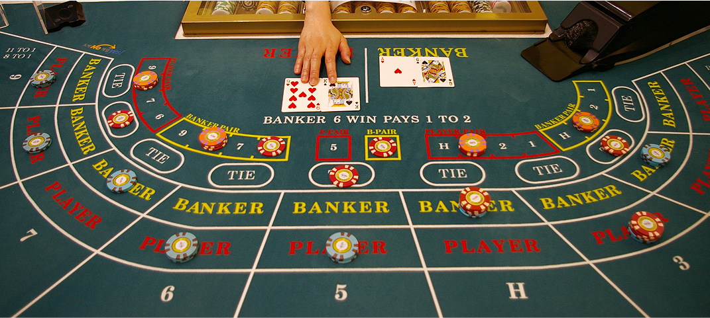

How to Play Baccarat
Baccarat is an exciting game, full of suspense and intrigue! Baccarat is both simple to learn and play. A game of baccarat has three possible outcomes: Player win, Banker win, and tie. Note that “Banker” does not refer to the house. Participants in the game have the option to bet on either the player or bankers hand.